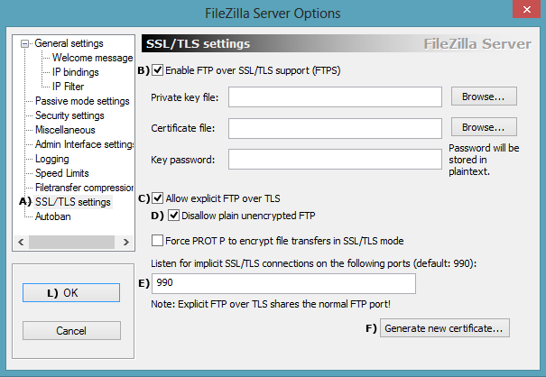
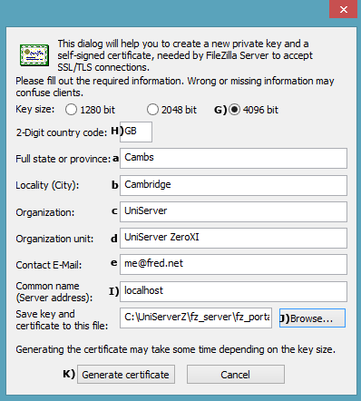
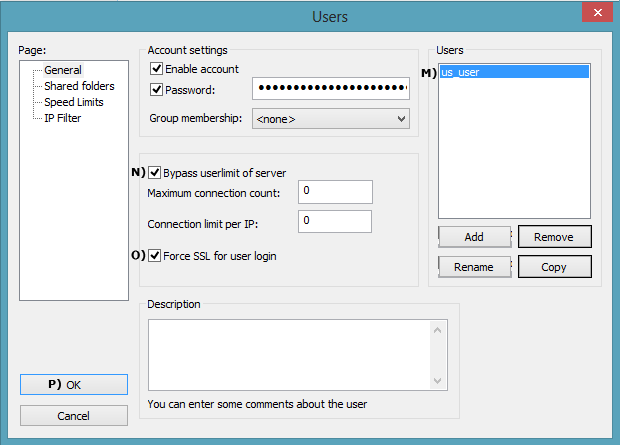
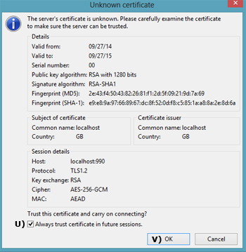
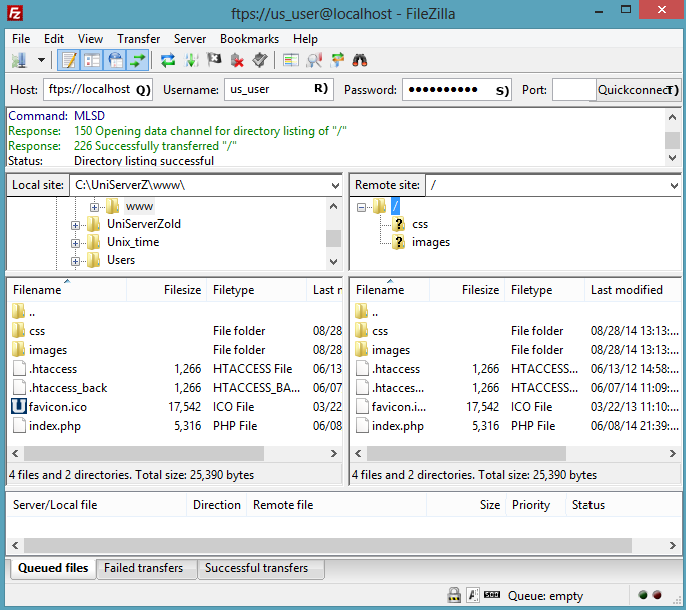

|
FileZilla SSL part 1
|
You can run a unsecured FTP server over the Internet however it is strongly recommend that all FTP communication be encrypted using SSL. Although initially intimidating it is relatively easy to configure a secure FTP server. Procedure is incremental allowing you to test each stage, first create a server certificate ensure it runs on a local network and finally configure for Internet access.
This procedure has been split over two pages covering each distinct area in detail.
Create Server certificate
FileZilla has a built in certificate generator making this process very easy
Enable SSL support
- Start UniServer FileZilla Controller: Double click on UniFzController.bat
- Start FileZilla Server: Click Start FZ Server
- Start FileZilla Interface: Click on Start Interface
- Select Edit > Settings
- A) From the left menu clcik on SSL/TLS settings
- B) Check Enable SSL/TSL support
- C) Default Allow explicit FTP over TLS
- D Checks Disallow plain unencrypted FTP
- E Default Listen for SSL/TLS connections on the following ports 990
- F Click Generate new certificate
Note: No need to fill in Private key or Certificate file paths, these are automatically filled in after the certificate is generated. We are not going to password protect the certificate, leave Key password blank.
|

|
Fill in certificate details
- G) Seclect Key size 4096 bit
- H) Insert 2-Digit country code
- a-eFill in real or dummy information
- I) Fill in Common name Use localhost or your real domain name
- J) Use browse and navigate to folder
C:\UniServerZ\fz_server\fz_portable
this is where the certificate will be saved.
- K) Click Generate certificate button, this will take a while.
- The certificate generator window closes
- Check Private key and Certificate file paths have been filled in and contain
C:\UniServerZ\fz_server\fz_portable\certificate.crt
- L) When complete click OK button.
Note: Check folder C:\UniServerZ\fz_server\fz_portable contains your new server certificate certificate.crt
|

|
Force SSL for user login
- From FileZilla Interface select Edit > Users
- M) Select a user account for example us_user
- N) Check Bypass
- O) Check Force SSL for user login
- P) Click OK
- Restart server
|

|
FileZilla portable client
The FileZilla portable client is ideal for testing and highly recommended as your main FTP client. It is assumed you have downloaded and saved this to folder ftp_client. If not this quick how to be of use:
- Create a new folder c:\fz_client
- Download client from SourceForge
- Save downloded file FileZillaPortable_3.9.0.5.paf.exe to folder c:\fz_client
- Double click file FileZillaPortable_3.9.0.5.paf.exe, extracts client. No need to change any parameters.
- To run client, navigate to folder C:\fz_client\FileZillaPortable and double click file FileZillaPortable.exe
Note: FileZilla client FileZillaPortable_3.9.0.1.paf.exe last version to run on XP
FileZilla Server Local test
Using the FileZilla client makes testing our secure FTP server very easy. Testing server with client on same PC (Local testing), proceed as follows:
- Start FileZilla server
- Start FileZilla client, shown on right
- Q) Enter host: ftps://localhost
- R) Enter username: us_user
- S) Enter password: us_user123
- T) Click Quickconnect
Unknown Certificate pop-up is displayed
- U) Check box Always trust...
- V) Click OK

|

Result: The remote site window (on the right) will show the content of root folder www (or root folder of the user configured).
|
FileZilla Server Local network test
On another PC connected to your network copy the FileZilla client and repeat the above steps 2-8 note only step 3 is different:
- Q) Enter host: ftps://192.168.1.12
|
FileZilla Server Local network test result
The IP address (192.168.1.12) must match the PC your are running the FTP server on.
Result: Identical to that for Local Test; the remote site window (on the right) will show the content of root folder www (or root folder of the user configured).
|
Summary
The above has shown how to secure an FTP server on a local network. If you are running a wireless network, data can be intercepted by sniffing the radio signals. Should your basic wireless security be compromised FTP encryption will provide another hurdle making it more difficult for that data to be accessed.
You also need the above security when FTPing data across the Internet. Before proceeding to FileZilla SSL part 2 make sure you can securely FTP locally.
--oOo--
|